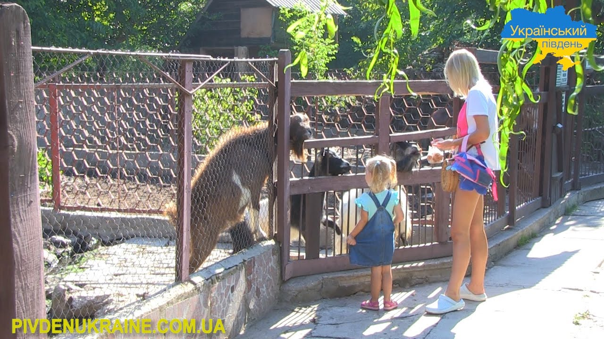

Архів
Усі матеріали
Пʼять історій у чотирьох рубриках. Оберіть матеріал або відкрийте рубрику з меню.
← Усі матеріали Художній репортаж
Художній репортаж
Оазис посеред бетонних джунглів
Нарешті я повернулася до батьків. Київ як завжди зустрічає натовпом, бо всі поспішають по своїх справах.
 Інтервʼю
Інтервʼю
Понад 1000 врятованих: як працює Центр порятунку диких тварин під Києвом
Центр порятунку диких тварин — єдина в Україні організація, яка рятує великих хижаків, виключно завдяки пожертвам небайдужих.
 Портретні нариси
Портретні нариси
Любов, що не має кордонів: історії порятунку, втрат та повернення за своїми улюбленцями
Шериф – кіт із французького притулку, якому родина Ніки подарувала справжню домівку.

ОглядиЗлочин без покарання: як росія веде війну проти беззахисних тварин
З перших днів повномасштабного вторгнення мільйони українців залишали свої домівки без особистих речей, але з хатніми улюбленцями.
 Огляди
Огляди
Хвости та лапи на службі: як тварини допомагають і рятують людей
Тварини допомагають нам не лише на побутовому рівні – іноді від них залежить наше життя.